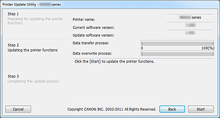

Operating Environment for Printer Update Utility
-
Target operating systems
-
Windows
-
- Windows 8, Windows 7, Windows Vista, Windows XP
-
Mac OS
-
- Mac OS X v10.8, Mac OS X v10.7, Mac OS X v10.6, Mac OS X v10.5.8
-
-
Requirements
-
- Computer on which the printer driver is installed.
-
If you are using Windows, open the Properties window of the printer driver, display the Ports tab, and select Enable bidirectional support. For instructions on opening the Properties window, refer to the on-screen manual that comes with the printer.
-
- Printer that you are using
-
- USB cable
-
- Printer Update Utility
 Important
Important
-
Check Whether Update is Necessary
You can check whether an update is required by printing the nozzle check pattern.
Check the software (firmware) version "Ver. X.XXX" that was printed in the nozzle check pattern print results. If the firmware version is earlier than Ver. 2.000, a firmware update is necessary.
Update according to "Firmware Version Update Procedure" described below.
 Note
Note
-
For instructions on printing the nozzle check pattern, refer to the on-screen manual that comes with the printer.
Firmware Version Update Procedure
-
Connect the computer and the printer by using a USB cable.
If a LAN cable or a USB cable for camera connection is connected, disconnect those cables.
For models with card slots, remove all the cards if they are inserted in the card slots.
Note
-
Make sure that only one printer is connected to the computer via a USB cable.
Important
-
If you are using Mac OS, make sure that your computer is set up so that it does not enter the sleep mode.
-
-
If you are using Windows, double-click
 (Printer Update.exe) to start the Update utility
(Printer Update.exe) to start the Update utility
If you are using Mac OS, double-click
(Printer Update) to start the Update utility
-
Check the contents of Step 1 that is displayed in the Printer Update Utility, turn on the printer power, and then click Next.
Note
-
If an error message is displayed, the possible causes are as follows:
-
Cause (1): The USB cable is not connected.
Corrective action: Connect the USB cable, and start over from step 1. -
Cause (2): The downloaded update file is for a different printer.
Corrective action: Download the file for the printer to be updated, and start over from step 1.
-
-
-
Check the contents of Step 2 that is displayed in the Printer Update Utility, turn on the printer power, and click Start.
*Depending on the operating system you are using, the displayed operation windows may differ.
Printer name: Name of the printer connected to the computer.
Current software version: Software version of the connected printer.
Update software version: Software version to which the printer is to be updated at this time.
Important
-
Do not turn off the printer or disconnect the USB cable until the update is complete. Doing so may cause an error.
-
-
If you are unable to click Start, the update was attempted on a printer that does not require firmware overwriting. Check the Current software version again. If it does not require the update then cancel it.
-
During the update, the error lamp on the printer will flash orange.
-
When the Step 3 window appears in the Printer Update Utility, check the message contents, and click Quit.
This completes the firmware update.
When the version update is complete, the printer power turns off automatically. To use the printer, first disconnect the power cable, reconnect it, and then turn on the power again.
If you are using the printer with LAN connection, disconnect the USB cable first and then, connect the LAN cable.
Important
-
If you will be using the printer in a LAN connection, return the regular printer setting to LAN connection.
To return the setting to the LAN connection setting when you are using Windows, you must select "Canon XXX Printer" of port name " CNBJNPxxxxxxxxxx."
For setting instructions, refer to the on-screen manual that comes with the printer.
Note
-
If the power is turned off during the update, the update will not end normally.
If the printer does not operate normally even if you turn off the printer power and then turn it back on again, the update may not have ended normally.
-
Note
Error Causes and Corrective Actions
If an error is detected during operation of the Printer Update Utility, an error message is displayed.
If an error message is displayed, perform the operation described in the message instructions.
The following table lists the causes and corrective actions of the main error messages that may be displayed.
|
Message |
Cause |
Corrective action |
|---|---|---|
If you are using Windows or Mac OS |
||
|
This program does not support the operating system you are using. |
An attempt was made to run the Printer Update Utility on an operating system that the utility does not support. |
Run the Printer Update Utility on the supported operating system. |
|
More than one printer is connected. Make sure only one printer is connected with a USB cable, and then restart the utility. |
Two or more printers to be updated are connected to the computer. |
Connect only one printer. |
|
The printer status is incorrect. Turn on the printer again, and then restart the utility. |
The printer was unable to execute the update. |
Turn on the printer again. |
|
An error occurred during the printer function update. Since the update failed, the printer cannot be used in its current condition. Turn on the printer again, and then be sure to restart the utility. |
The printer power was turned off or the USB cable was disconnected during execution of the update. |
Press OK button to terminate the Printer Update Utility. Turn off the printer power, wait a few seconds, and then turn on the power again. If the printer does not start normally or if the update cannot be executed, repairs are necessary. |
If you are using Windows |
||
|
The printer cannot be found. Check the following items, and then restart the utility:
|
|
|
|
If you are using Mac OS |
||
|
Mac OS X Classic is running. |
An attempt was made to operate the Printer Update Utility while Classic was running on Mac OS X. |
Stop Classic, and operate the Printer Update Utility from Mac OS X. |
|
The printer cannot be found. Check the following items, and then restart the utility:
|
|
|